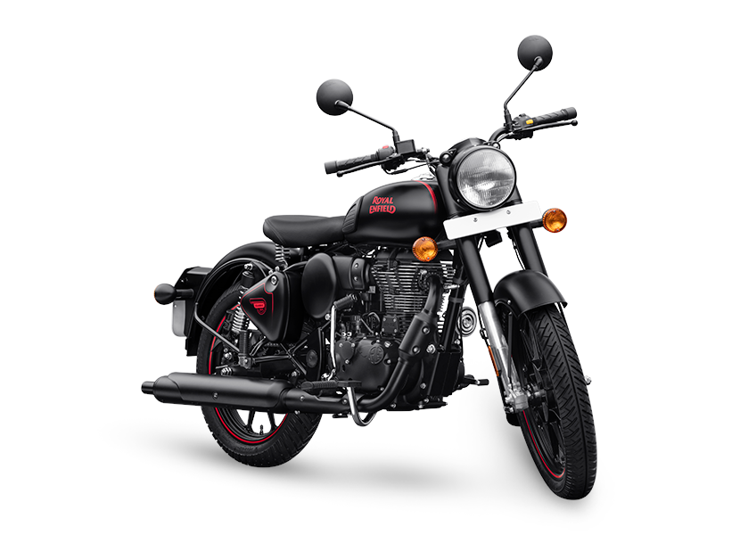

Through historical references, stories and anecdotes shared by our key collaborators, we would like to take you on a wistful trip down memory lane to live the legacy of the Timeless Classic - from its inception, captured in a monochromatic photograph of the G2 Model, to the journey it took to becoming the most loved motorcycle across the globe.
Timeless Classic:The All-New Classic 350 continues to embody the traditions and craftsmanship of the past as it is reborn. Inspired by the post war G2 model, first born in 1950�s, the all new Classic 350 continues to be a testament to the timeless design which took the motorcycling world with an awe back in the heydays of British motorcycling. The Classic teardrop fuel tank, the distinctive thump and the hallmark casquette headlamp - all harmonise as one, rejoicing in the masterpiece that is the timeless Royal Enfield Classic.
Make It Yours:With �Make it Yours� for the All New Classic 350 personalize your motorcycle with the 3D configurator that allows you to toggle between options to enhance comfort, protection and style of your machine
The first generation Classic 350 and the Classic 500 feature the new unit construction engine in their 350cc and 500cc variants respectively. However the Classic 350 uses a carburettor for fuel delivery and the Classic 500 has EFI. The Classic 350 has an ammeter while the Classic 500 has a low fuel indicator light and engine check light instead of the ammeter. The ammeter on the Classic 350 is more of a vestigial remain as the modern Classic 350 has no practical use for it. In the older models with CB points, when the piston was in the top dead centre (CB points closed) then the ammeter would stay in the middle. This feature allowed the rider to use the decompression lever to move the piston to top dead center and kick starter with relative ease. Both of these models are more expensive and targeted at a market segment above the Royal Enfield Bullet 350 and the Bullet 500. Both the Classic 350 and the Classic 500 come in a variety of color options, including; Stealth Black, Chrome, Battle Green, and Gunmetal Grey. In 2017 Royal Enfield equipped Classic 500 models with Euro 4 compliance which included ABS brakes for front and rear and better emission control system. In 2018 Royal Enfield released Classic 350 models with ABS in some markets. In 2019 classic 500 production is stopped and company launches new bs6 engines and dual channel abs A final "end of build" production run of 1000 units is launched, Classic 500 Tribute Black.
The Classic 350 has made fortunes for Royal Enfield in the past decade. It is the staple offering from the bikemaker that has helped the company grab a 94 % share in the 250c-700cc segment in India. Currently, Royal Enfield has its hands full with upcoming projects and frequent sightings of several test mules have become a regular affair. The Classic 350 is set to receive a major update and the next generation of the retro classic motorcycle has been spied on multiple occasions, revealing key details. Let us take a detailed look at all the changes we can make out from the spy shots that have surfaced in the past few months:
Updated looksWhile the Classic 350 will retain its retro charm, Royal Enfield will introduce some aesthetic tweaks here and there to mark the update.
Royal Enield Classic 350 spy shotsFirst up, we can expect RE to revamp the headlight assembly to lend it a more modern look while the rear end will also witness a circular tail lamp with chrome bezels surround, chrome-plated exhaust and broader rear fenders. Some spy shots have also revealed that RE could also offer alloy wheels as a standard fitment.
New FrameRoyal Enfield debuted the new J platform with the Meteor 350 and it is almost confirmed that the updated Classic 350 will also sit on the same platform, which will further enable it to harness the full potential of the new powertrain.
New engineIt is almost confirmed that the new Classic 350 will be built around the same engine found on the Meteor 350. It is a 349cc, air-cooled, single-cylinder engine with an OHC design. This engine makes 20.2 hp power at 6,100 rpm and 27 Nm torque at 4,000 rpm, mated to a 5-speed gearbox. The engine will allow for lower emissions and instant acceleration. Compared to the old 350cc engine, the all-new engine has a spread of an extra 1000 rpms and has been tweaked for crisp throttle response.
The engine also gets a balancer shaft to iron out all vibrations. It has been tuned to deliver a healthy dose of torque in the low and mid-range. One of the main niggles which Royal Enfield�s 350cc motorcycles have always been riddled with is vibrations. But it seems like Royal Enfield has managed to turn things around with the Meteor 350. The RE Classic 350 is going to receive a lot of changes and new equipment in its new avatar, one of them being an updated instrument cluster. The current iteration of the Classic 350 makes do with an archaic instrument cluster. In the modern world where manufacturers are equipping clusters with Bluetooth connectivity, the Classic 350 still doesn�t even get a fuel gauge! Even a second grader will be able to pick the odd one out here but that is all set to change in its next iteration. This time around, apart from the speedometer, it also gets a small digital screen that displays information like fuel level, trip meters, time display, Odometer as well as the mention of ECO in the display. Not to forget, it gets Tripper navigation too!
Different variants and colours
Previously surfaced spy shots have revealed that the Classic 350 is going to be offered with at least 4 paint schemes � green, dark matte grey, glossy grey, and desert storm � which will vary depending on the variant of the motorcycle. Moreover, it seems like RE is going to offer the updated Classic 350 in two variants: in a single-seat version as well as a dual split-type seat trim. Apart from that, customers will also get an option to either go with the dual disc model or the rear drum brake model. Royal Enfield motorcycles have always been associated with their signature thump and a recent spy video has revealed how the updated Classic 350 will sound like. And we are happy to report that it will most likely retain its signature thump but it does sound more mature and umm� modern than before. The refined exhaust note should be attributed to the new engine that the Classic 350 has borrowed from the Meteor 350.